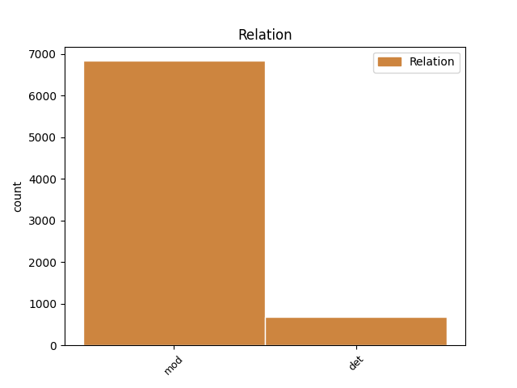
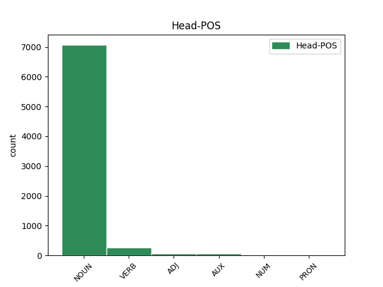
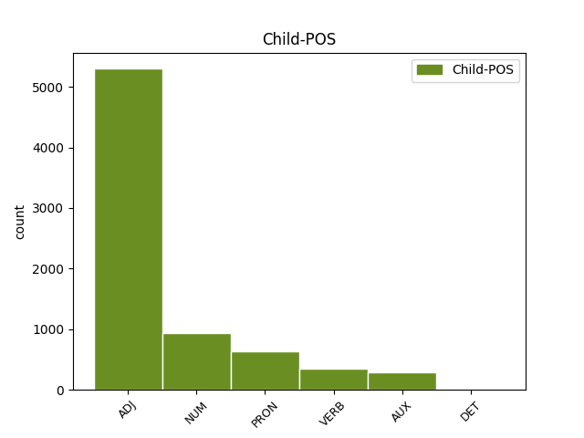

Distribution of features within this leaf



Agreement Rules sorted by frequency.
- When the dependent token is the modifer(mod) of the head token, and the dependent token is ADJ.
1 ל _ _ _ _ 0 _ _ _
2 גליל _ _ _ _ 0 _ _ _
3 לא _ _ _ _ 0 _ _ _
4 היתה _ _ _ _ 0 _ _ _
5 תשובה _ _ _ _ 0 _ _ _
6 ל _ _ _ _ 0 _ _ _
7 ה_ _ _ _ _ 0 _ _ _
8 יכולת _ _ _ _ 0 _ _ _
9 ה _ _ _ _ 0 _ _ _
10 אישית _ _ _ _ 0 _ _ _
11 ה _ _ _ _ 0 _ _ _
12 גבוהה _ _ _ _ 0 _ _ _
13 של _ _ _ _ 0 _ _ _
14 פירסון _ _ _ _ 0 _ _ _
15 , _ _ _ _ 0 _ _ _
16 ש _ _ _ _ 0 _ _ _
17 קלע _ _ _ _ 0 _ _ _
18 33 _ _ _ _ 0 _ _ _
19 נקודות _ _ _ _ 0 _ _ _
20 ו _ _ _ _ 0 _ _ _
21 ריכז _ _ _ _ 0 _ _ _
22 את _ _ _ _ 0 _ _ _
23 משחק _ _ _ _ 0 _ _ _
24 קבוצה_ _ _ _ _ 0 _ _ _
25 _של_ _ _ _ _ 0 _ _ _
26 _הוא _ _ _ _ 0 _ _ _
27 במשך _ _ _ _ 0 _ _ _
28 דקות דקה NOUN NOUN Gender=Fem|Number=Plur 0 _ _ _
29 רבות רב ADJ ADJ Gender=Fem|Number=Plur 28 mod _ SpaceAfter=No
30 . _ _ _ _ 0 _ _ _
1 שפר _ _ _ _ 0 _ _ _
2 ו _ _ _ _ 0 _ _ _
3 ליף _ _ _ _ 0 _ _ _
4 ש _ _ _ _ 0 _ _ _
5 שמרו _ _ _ _ 0 _ _ _
6 עליו _ _ _ _ 0 _ _ _
7 _הוא _ _ _ _ 0 _ _ _
8 , _ _ _ _ 0 _ _ _
9 יצאו _ _ _ _ 0 _ _ _
10 ב _ _ _ _ 0 _ _ _
11 חמש חמש NUM NUM Gender=Fem|Number=Sing 12 mod _ _
12 עבירות עבירה NOUN NOUN Gender=Fem|Number=Plur 0 _ _ _
13 . _ _ _ _ 0 _ _ _
1 אין _ _ _ _ 0 _ _ _
2 מנוס _ _ _ _ 0 _ _ _
3 מ _ _ _ _ 0 _ _ _
4 ה _ _ _ _ 0 _ _ _
5 מסקנה _ _ _ _ 0 _ _ _
6 : _ _ _ _ 0 _ _ _
7 מיקי _ _ _ _ 0 _ _ _
8 נשאר _ _ _ _ 0 _ _ _
9 מיקי _ _ _ _ 0 _ _ _
10 אבל _ _ _ _ 0 _ _ _
11 ה _ _ _ _ 0 _ _ _
12 ליגה _ _ _ _ 0 _ _ _
13 ה _ _ _ _ 0 _ _ _
14 זו _ _ _ _ 0 _ _ _
15 כבר _ _ _ _ 0 _ _ _
16 לא _ _ _ _ 0 _ _ _
17 אותה אותו PRON PRON Definite=Def|Gender=Fem|Number=Sing|Person=3|PronType=Prs 18 det _ _
18 ליגה ליגה NOUN NOUN Gender=Fem|Number=Sing 0 _ _ _
19 . _ _ _ _ 0 _ _ _
1 מה _ _ _ _ 0 _ _ _
2 ש _ _ _ _ 0 _ _ _
3 אמור _ _ _ _ 0 _ _ _
4 היה _ _ _ _ 0 _ _ _
5 להיות _ _ _ _ 0 _ _ _
6 מאבק _ _ _ _ 0 _ _ _
7 צמרת _ _ _ _ 0 _ _ _
8 שקול _ _ _ _ 0 _ _ _
9 , _ _ _ _ 0 _ _ _
10 הפך _ _ _ _ 0 _ _ _
11 במהרה _ _ _ _ 0 _ _ _
12 ל _ _ _ _ 0 _ _ _
13 מיפגן _ _ _ _ 0 _ _ _
14 חד _ _ _ _ 0 _ _ _
15 - _ _ _ _ 0 _ _ _
16 סיטרי _ _ _ _ 0 _ _ _
17 , _ _ _ _ 0 _ _ _
18 בעקבות _ _ _ _ 0 _ _ _
19 משחק משחק NOUN NOUN Gender=Masc|Number=Sing 0 _ _ _
20 שובה _ VERB VERB Definite=Cons|Gender=Masc|HebBinyan=PAAL|Number=Sing|Person=1,2,3|VerbForm=Part|Voice=Act 19 mod _ _
21 עין _ _ _ _ 0 _ _ _
22 ו _ _ _ _ 0 _ _ _
23 תכליתי _ _ _ _ 0 _ _ _
24 של _ _ _ _ 0 _ _ _
25 מכבי _ _ _ _ 0 _ _ _
26 ראשל"ץ _ _ _ _ 0 _ _ _
27 ש _ _ _ _ 0 _ _ _
28 ניצח _ _ _ _ 0 _ _ _
29 ללא _ _ _ _ 0 _ _ _
30 מאמץ _ _ _ _ 0 _ _ _
31 09 _ _ _ _ 0 _ _ _
32 931 _ _ _ _ 0 _ _ _
33 . _ _ _ _ 0 _ _ _
1 יתו _ _ _ _ 0 _ _ _
2 אינו אינו AUX AUX Gender=Masc|Number=Sing|Person=3|Polarity=Neg|VerbForm=Part|VerbType=Cop 4 mod _ _
3 עוד _ _ _ _ 0 _ _ _
4 מבצר_ מבצר NOUN NOUN Definite=Def|Gender=Masc|Number=Sing 0 _ _ _
5 _של_ _ _ _ _ 0 _ _ _
6 _הוא _ _ _ _ 0 _ _ _
7 . _ _ _ _ 0 _ _ _
1 הוא _ _ _ _ 0 _ _ _
2 היה _ _ _ _ 0 _ _ _
3 שייך _ _ _ _ 0 _ _ _
4 ל _ _ _ _ 0 _ _ _
5 משפחת _ _ _ _ 0 _ _ _
6 גולדברג _ _ _ _ 0 _ _ _
7 , _ _ _ _ 0 _ _ _
8 ש _ _ _ _ 0 _ _ _
9 אחד אחד NUM NUM Gender=Masc|Number=Sing 11 det _ _
10 מ _ _ _ _ 0 _ _ _
11 בן_ בן NOUN NOUN Definite=Def|Gender=Masc|Number=Plur 0 _ _ _
12 _של_ _ _ _ _ 0 _ _ _
13 _היא _ _ _ _ 0 _ _ _
14 , _ _ _ _ 0 _ _ _
15 גדעון _ _ _ _ 0 _ _ _
16 גולדברג _ _ _ _ 0 _ _ _
17 , _ _ _ _ 0 _ _ _
18 מכר _ _ _ _ 0 _ _ _
19 את _ _ _ _ 0 _ _ _
20 חלק_ _ _ _ _ 0 _ _ _
21 _של_ _ _ _ _ 0 _ _ _
22 _הוא _ _ _ _ 0 _ _ _
23 ( _ _ _ _ 0 _ _ _
24 50 _ _ _ _ 0 _ _ _
25 % _ _ _ _ 0 _ _ _
26 ) _ _ _ _ 0 _ _ _
27 ב _ _ _ _ 0 _ _ _
28 ה_ _ _ _ _ 0 _ _ _
29 נכס _ _ _ _ 0 _ _ _
30 . _ _ _ _ 0 _ _ _
1 חוטף _ _ _ _ 0 _ _ _
2 ו _ _ _ _ 0 _ _ _
3 קולע _ _ _ _ 0 _ _ _
4 ו _ _ _ _ 0 _ _ _
5 נע _ _ _ _ 0 _ _ _
6 ימינה _ _ _ _ 0 _ _ _
7 ו _ _ _ _ 0 _ _ _
8 שמאלה _ _ _ _ 0 _ _ _
9 , _ _ _ _ 0 _ _ _
10 הצידה _ _ _ _ 0 _ _ _
11 ו _ _ _ _ 0 _ _ _
12 אחורה _ _ _ _ 0 _ _ _
13 ו _ _ _ _ 0 _ _ _
14 בסיבוב _ _ _ _ 0 _ _ _
15 , _ _ _ _ 0 _ _ _
16 גמיש _ _ _ _ 0 _ _ _
17 ו _ _ _ _ 0 _ _ _
18 זריז _ _ _ _ 0 _ _ _
19 ו _ _ _ _ 0 _ _ _
20 שאפתן _ _ _ _ 0 _ _ _
21 כמו _ _ _ _ 0 _ _ _
22 ב _ _ _ _ 0 _ _ _
23 ה_ _ _ _ _ 0 _ _ _
24 ימים יום NOUN NOUN Gender=Masc|HebSource=ConvUncertainHead|Number=Plur 0 _ _ _
25 ה _ _ _ _ 0 _ _ _
26 בלתי _ _ _ _ 0 _ _ _
27 נשכחים _ _ _ _ 0 _ _ _
28 ה _ _ _ _ 0 _ _ _
29 הם הוא PRON PRON Gender=Masc|Number=Plur|Person=3|PronType=Prs 24 mod _ _
30 . _ _ _ _ 0 _ _ _
1 טרנר _ _ _ _ 0 _ _ _
2 הורה _ _ _ _ 0 _ _ _
3 לבדוק _ _ _ _ 0 _ _ _
4 מדוע _ _ _ _ 0 _ _ _
5 ל _ _ _ _ 0 _ _ _
6 חגאבי _ _ _ _ 0 _ _ _
7 ו _ _ _ _ 0 _ _ _
8 שאר שאר DET DET Definite=Cons|Gender=Masc 10 det _ _
9 ה _ _ _ _ 0 _ _ _
10 שוטרים שוטר NOUN NOUN Gender=Masc|Number=Plur 0 _ _ _
11 לא _ _ _ _ 0 _ _ _
12 היו _ _ _ _ 0 _ _ _
13 אפודי _ _ _ _ 0 _ _ _
14 מגן _ _ _ _ 0 _ _ _
15 , _ _ _ _ 0 _ _ _
16 אם _ _ _ _ 0 _ _ _
17 כי _ _ _ _ 0 _ _ _
18 הדגיש _ _ _ _ 0 _ _ _
19 כי _ _ _ _ 0 _ _ _
20 אין _ _ _ _ 0 _ _ _
21 ביטחון _ _ _ _ 0 _ _ _
22 ש _ _ _ _ 0 _ _ _
23 ה _ _ _ _ 0 _ _ _
24 דקירה _ _ _ _ 0 _ _ _
25 היתה _ _ _ _ 0 _ _ _
26 נמנעת _ _ _ _ 0 _ _ _
27 גם _ _ _ _ 0 _ _ _
28 אם _ _ _ _ 0 _ _ _
29 הוא _ _ _ _ 0 _ _ _
30 היה _ _ _ _ 0 _ _ _
31 לבוש _ _ _ _ 0 _ _ _
32 אפוד _ _ _ _ 0 _ _ _
33 . _ _ _ _ 0 _ _ _
1 ב _ _ _ _ 0 _ _ _
2 נוסף _ _ _ _ 0 _ _ _
3 ל _ _ _ _ 0 _ _ _
4 כך _ _ _ _ 0 _ _ _
5 נחתמו _ _ _ _ 0 _ _ _
6 חוזי _ _ _ _ 0 _ _ _
7 עבודה _ _ _ _ 0 _ _ _
8 עם _ _ _ _ 0 _ _ _
9 רבים רב VERB VERB Gender=Masc|HebBinyan=PAAL|Number=Plur|Person=1,2,3|VerbForm=Part|Voice=Act 11 det _ _
10 מ _ _ _ _ 0 _ _ _
11 אנשי איש NOUN NOUN Definite=Cons|Gender=Masc|Number=Plur 0 _ _ _
12 ה _ _ _ _ 0 _ _ _
13 ארגון _ _ _ _ 0 _ _ _
14 ב _ _ _ _ 0 _ _ _
15 מדינות _ _ _ _ 0 _ _ _
16 ערביות _ _ _ _ 0 _ _ _
17 ו _ _ _ _ 0 _ _ _
18 איסלאמיות _ _ _ _ 0 _ _ _
19 רבות _ _ _ _ 0 _ _ _
20 " _ _ _ _ 0 _ _ _
21 , _ _ _ _ 0 _ _ _
22 טוען _ _ _ _ 0 _ _ _
23 ה _ _ _ _ 0 _ _ _
24 עיתון _ _ _ _ 0 _ _ _
25 . _ _ _ _ 0 _ _ _
1 ה _ _ _ _ 0 _ _ _
2 עיר _ _ _ _ 0 _ _ _
3 מתאימה _ _ _ _ 0 _ _ _
4 ל_ _ _ _ _ 0 _ _ _
5 _הם _ _ _ _ 0 _ _ _
6 ו _ _ _ _ 0 _ _ _
7 חיי _ _ _ _ 0 _ _ _
8 ה _ _ _ _ 0 _ _ _
9 קיבוץ _ _ _ _ 0 _ _ _
10 אינם אינו AUX AUX Gender=Masc|Number=Plur|Person=3|Polarity=Neg|VerbForm=Part|VerbType=Cop 12 det _ _
11 בשביל_ _ _ _ _ 0 _ _ _
12 _הם הוא PRON PRON Gender=Masc|Number=Plur|Person=3|PronType=Prs 0 _ _ _
13 " _ _ _ _ 0 _ _ _
14 . _ _ _ _ 0 _ _ _
1 פנקייביץ _ _ _ _ 0 _ _ _
2 הצליח _ _ _ _ 0 _ _ _
3 לסדר _ _ _ _ 0 _ _ _
4 ל _ _ _ _ 0 _ _ _
5 אחדים אחדים ADJ ADJ Gender=Masc|Number=Plur 7 det _ _
6 מן_ _ _ _ _ 0 _ _ _
7 _הם הוא PRON PRON Gender=Masc|Number=Plur|Person=3|PronType=Prs 0 _ _ _
8 ניירות _ _ _ _ 0 _ _ _
9 ש _ _ _ _ 0 _ _ _
10 איפשרו _ _ _ _ 0 _ _ _
11 ל_ _ _ _ _ 0 _ _ _
12 _הם _ _ _ _ 0 _ _ _
13 להישאר _ _ _ _ 0 _ _ _
14 מ _ _ _ _ 0 _ _ _
15 חוץ _ _ _ _ 0 _ _ _
16 ל _ _ _ _ 0 _ _ _
17 ה_ _ _ _ _ 0 _ _ _
18 גטו _ _ _ _ 0 _ _ _
19 . _ _ _ _ 0 _ _ _
Disagree Examples:
1 סופר _ _ _ _ 0 _ _ _
2 " _ _ _ _ 0 _ _ _
3 ה _ _ _ _ 0 _ _ _
4 ארץ _ _ _ _ 0 _ _ _
5 " _ _ _ _ 0 _ _ _
6 ב _ _ _ _ 0 _ _ _
7 ה_ _ _ _ _ 0 _ _ _
8 צפון _ _ _ _ 0 _ _ _
9 , _ _ _ _ 0 _ _ _
10 מוסיף _ _ _ _ 0 _ _ _
11 : _ _ _ _ 0 _ _ _
12 יריות _ _ _ _ 0 _ _ _
13 נשמעו נשמע VERB VERB Gender=Fem,Masc|HebBinyan=NIFAL|Number=Plur|Person=3|Tense=Past|Voice=Mid 0 _ _ _
14 אתמול _ _ _ _ 0 _ _ _
15 ב _ _ _ _ 0 _ _ _
16 שעה _ _ _ _ 0 _ _ _
17 2000 _ _ _ _ 0 _ _ _
18 ב _ _ _ _ 0 _ _ _
19 ה_ _ _ _ _ 0 _ _ _
20 ערב _ _ _ _ 0 _ _ _
21 ב _ _ _ _ 0 _ _ _
22 שפרעם _ _ _ _ 0 _ _ _
23 , _ _ _ _ 0 _ _ _
24 סמוך סמוך ADJ ADJ Gender=Masc|Number=Sing 13 mod _ _
25 ל _ _ _ _ 0 _ _ _
26 בית_ _ _ _ _ 0 _ _ _
27 _של_ _ _ _ _ 0 _ _ _
28 _הוא _ _ _ _ 0 _ _ _
29 של _ _ _ _ 0 _ _ _
30 ראש _ _ _ _ 0 _ _ _
31 ה _ _ _ _ 0 _ _ _
32 עירייה _ _ _ _ 0 _ _ _
33 , _ _ _ _ 0 _ _ _
34 איברהים _ _ _ _ 0 _ _ _
35 נימר _ _ _ _ 0 _ _ _
36 חוסיין _ _ _ _ 0 _ _ _
37 . _ _ _ _ 0 _ _ _
1 נציג _ _ _ _ 0 _ _ _
2 דובר _ _ _ _ 0 _ _ _
3 צה"ל _ _ _ _ 0 _ _ _
4 ב _ _ _ _ 0 _ _ _
5 פיקוד _ _ _ _ 0 _ _ _
6 דרום _ _ _ _ 0 _ _ _
7 סירב _ _ _ _ 0 _ _ _
8 לפרט _ _ _ _ 0 _ _ _
9 ב _ _ _ _ 0 _ _ _
10 אילו _ PRON PRON Gender=Fem,Masc|Number=Plur,Sing|PronType=Int 11 det _ _
11 כדורים כדור NOUN NOUN Gender=Masc|Number=Plur 0 _ _ _
12 נפצעו _ _ _ _ 0 _ _ _
13 ה _ _ _ _ 0 _ _ _
14 תושבים _ _ _ _ 0 _ _ _
15 . _ _ _ _ 0 _ _ _
1 מאות מאות NUM NUM Definite=Cons|Gender=Fem|Number=Plur 2 mod _ _
2 תושבים תושב NOUN NOUN Gender=Masc|Number=Plur 0 _ _ _
3 תקפו _ _ _ _ 0 _ _ _
4 את _ _ _ _ 0 _ _ _
5 משטרת _ _ _ _ 0 _ _ _
6 עזה _ _ _ _ 0 _ _ _
7 ב _ _ _ _ 0 _ _ _
8 אבנים _ _ _ _ 0 _ _ _
9 ו _ _ _ _ 0 _ _ _
10 ב _ _ _ _ 0 _ _ _
11 מוטות _ _ _ _ 0 _ _ _
12 ברזל _ _ _ _ 0 _ _ _
13 ו _ _ _ _ 0 _ _ _
14 ניפצו _ _ _ _ 0 _ _ _
15 שמשות _ _ _ _ 0 _ _ _
16 ו _ _ _ _ 0 _ _ _
17 פנסים _ _ _ _ 0 _ _ _
18 ב _ _ _ _ 0 _ _ _
19 כלי _ _ _ _ 0 _ _ _
20 רכב _ _ _ _ 0 _ _ _
21 . _ _ _ _ 0 _ _ _
1 מקורות _ _ _ _ 0 _ _ _
2 פלשתיניים _ _ _ _ 0 _ _ _
3 טענו _ _ _ _ 0 _ _ _
4 כי _ _ _ _ 0 _ _ _
5 ב _ _ _ _ 0 _ _ _
6 סוף _ _ _ _ 0 _ _ _
7 ה _ _ _ _ 0 _ _ _
8 שבוע _ _ _ _ 0 _ _ _
9 הוכו הוכה VERB VERB Gender=Fem,Masc|HebBinyan=HUFAL|Number=Plur|Person=3|Tense=Past|Voice=Pass 0 _ _ _
10 ב _ _ _ _ 0 _ _ _
11 מרכז _ _ _ _ 0 _ _ _
12 שכם _ _ _ _ 0 _ _ _
13 01 _ _ _ _ 0 _ _ _
14 תושבים _ _ _ _ 0 _ _ _
15 מקומיים _ _ _ _ 0 _ _ _
16 בידי _ _ _ _ 0 _ _ _
17 חיילי _ _ _ _ 0 _ _ _
18 צה"ל _ _ _ _ 0 _ _ _
19 , _ _ _ _ 0 _ _ _
20 סמוך סמך VERB VERB Gender=Masc|Number=Sing|Person=1,2,3|VerbForm=Part 9 mod _ _
21 ל _ _ _ _ 0 _ _ _
22 שוק _ _ _ _ 0 _ _ _
23 ה _ _ _ _ 0 _ _ _
24 ירקות _ _ _ _ 0 _ _ _
25 . _ _ _ _ 0 _ _ _
1 ו _ _ _ _ 0 _ _ _
2 כך _ _ _ _ 0 _ _ _
3 , _ _ _ _ 0 _ _ _
4 ב _ _ _ _ 0 _ _ _
5 ניסיון _ _ _ _ 0 _ _ _
6 לברוח _ _ _ _ 0 _ _ _
7 רחוק _ _ _ _ 0 _ _ _
8 ככל _ _ _ _ 0 _ _ _
9 ה _ _ _ _ 0 _ _ _
10 אפשר _ _ _ _ 0 _ _ _
11 מ _ _ _ _ 0 _ _ _
12 מה _ _ _ _ 0 _ _ _
13 ש _ _ _ _ 0 _ _ _
14 מאוס _ _ _ _ 0 _ _ _
15 על_ _ _ _ _ 0 _ _ _
16 _הם _ _ _ _ 0 _ _ _
17 ב _ _ _ _ 0 _ _ _
18 גוש _ _ _ _ 0 _ _ _
19 אמונים _ _ _ _ 0 _ _ _
20 ו _ _ _ _ 0 _ _ _
21 ב _ _ _ _ 0 _ _ _
22 שאר _ _ _ _ 0 _ _ _
23 פלגי _ _ _ _ 0 _ _ _
24 ה _ _ _ _ 0 _ _ _
25 ימין _ _ _ _ 0 _ _ _
26 , _ _ _ _ 0 _ _ _
27 משתדלים _ _ _ _ 0 _ _ _
28 שגב _ _ _ _ 0 _ _ _
29 ו _ _ _ _ 0 _ _ _
30 דומי_ _ _ _ _ 0 _ _ _
31 _של_ _ _ _ _ 0 _ _ _
32 _הוא _ _ _ _ 0 _ _ _
33 למחוק _ _ _ _ 0 _ _ _
34 כל _ _ _ _ 0 _ _ _
35 בסיס _ _ _ _ 0 _ _ _
36 ל _ _ _ _ 0 _ _ _
37 תרבות _ _ _ _ 0 _ _ _
38 משותפת _ _ _ _ 0 _ _ _
39 , _ _ _ _ 0 _ _ _
40 ל _ _ _ _ 0 _ _ _
41 חוויה _ _ _ _ 0 _ _ _
42 משותפת _ _ _ _ 0 _ _ _
43 , _ _ _ _ 0 _ _ _
44 ל _ _ _ _ 0 _ _ _
45 רגשות _ _ _ _ 0 _ _ _
46 - _ _ _ _ 0 _ _ _
47 תשתית תשתית NOUN NOUN Gender=Fem|Number=Sing 0 _ _ _
48 משותפים משותף ADJ ADJ Gender=Masc|Number=Plur 47 mod _ SpaceAfter=No
49 . _ _ _ _ 0 _ _ _